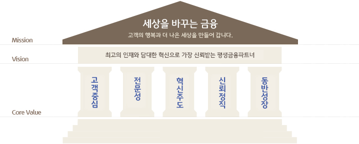

KB국민은행은 개인 및 소호고객을 대상으로 한 개인금융상품과 기업고객을 대상으로 한 대출상품 및 통합자금관리서비스를 제공한다.

| 대표자 | 윤종규 | 설립일 | 2008년 09월 29일 |
|---|---|---|---|
| 기업규모 | 대기업 | 기업형태 | 코스피 |
| 매출액 | 연결 재무제표 : 58조 6,843억 별도 재무제표 : 1조 9,393억 |
영업이익 | 연결 재무제표 : 5조 6,389억 별도 재무제표 : 1조 6,683억 |
| 당기손익 | 연결 재무제표 : 4조 1,732억 별도 재무제표 : 1조 6,845억 |
신용등급 | 최상 (2023.04) |
| 사원수 | 145명 (2022.12) | 상세업종 | 지주회사 |
기준금리 인상과 포트폴리오 개선에 따른 NIM 상승으로 이자이익이 증가하였으나, 코로나19 지속, 정책지원 중단 등 불확실성 지속에 따른 보수적인 충당금적립으로 당기순이익은 전년 대비 소폭 감소함. 비이자이익은 금리 인상으로 인한 자산시장 침체 등 비우호적인 시장 환경에 따른 자본시장부문, 증권 브로커리지 및 은행 신탁/IB 손익 감소 영향으로 전년대비 1조원 이상 감소함. 장기/자동차 손해율 개선으로 보험영업이익이 성장함.